측량및지형공간정보산업기사 (2015-03-08 기출문제)
1과목: 응용측량
1. 그림과 같은 단면을 갖는 길이 50m의 도로를 만들기 위한 전체 성토량은? (단, 성토경사는 양쪽이 1:1.5로 동일하고, 지면은 평지이다.)
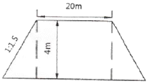
- 104m3
- 1040m3
- 420m3
- 5200m3
(정답률: 72%)

2. 한 변의 길이가 10m인 정사각형의 토지를 0.1m2까지 정확하게 구하기 위해서는 1변의 길이를 어느 정도까지 정확하게 관측하여야 하는가?
- 1mm
- 3mm
- 5mm
- 10mm
(정답률: 60%)
3. 그림과 같은 단곡선에서 곡선반지름(R)=50m, Al의 방위=N79° 49' 32" Bl의 방위=N50° 10' 28" W일 때 AB의 거리는?
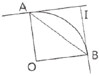
- 34.20m
- 28.36m
- 42.26m
- 10.81m
(정답률: 60%)
4. 다음 중 완화곡선으로 주로 사용되지 않는 것은?
- clothoid
- 2차포물선
- Iemniscate
- 3차포물선
(정답률: 76%)
5. 도로에서 곡선 위를 주행할 때 원심력에 의한 차량의 전복이나 미끄러짐을 방지하기 위해 곡선중심으로부터 바깥쪽의 도로를 높이는 것은?
- 확폭(slack)
- 편경사(cant)
- 종거(ordinate)
- 편각(deflection angle)
(정답률: 88%)
6. 교점(I.P.)가 도로기점으로부터 300m에 위치한, 곡선반지름 R=200m, 교각 I=90°인 원곡선을 편각법으로 측설할 때, 종점(E.C.)의 위치는? (단, 중심말뚝의 간격은 20mm이다.)
- No.20+14.159m
- No.21+14.159m
- No.22+14.159m
- No.23+14.159m
(정답률: 69%)
7. 노선측량에서 그림과 같은 단곡선을 설치할 때 CD의 거리는? (단, 곡선 반지름(R)=50m, α=20°)
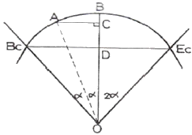
- 17.10m
- 8.68m
- 8.55m
- 4.34m
(정답률: 57%)
8. 그림과 같이 도로건설의 절취단면을 표시한 것이다. 횡단면적을 계산한 값은?
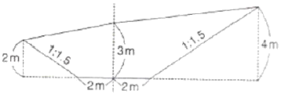
- 25.0m2
- 25.5m2
- 30.0m2
- 30.5m2
(정답률: 76%)
9. 캔트 C인 노선의 곡선 반지름을 2배로 조정하면 조정된 캔트는?
- C/2
- C/4
- C
- 2C
(정답률: 84%)
10. 수로조사 성과심사의 대상에 해당되는 것은?
- 노선측량
- 해안선측량
- 지적측량
- 터널측량
(정답률: 78%)
11. 터널측량을 크게 3가지로 분류할 때 이에 포함되지 않는 것은?
- 터널 외 측량
- 터널 내 측량
- 터널 내외 연결측량
- 터널 관통 측량
(정답률: 89%)
12. 그림과 같이 AC 및 BD 사이에 반지름 300m의 원곡선을 설치하기 위하여 ACD=150°, ∠CDB=90°, CD=200m을 관측하였다면 C점으로부터 곡선 시점까지의 거리는?
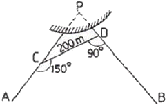
- 209.82m
- 242.62m
- 288.68m
- 302.82m
(정답률: 60%)
13. 경관평가요인 중 일반적으로 시설물의 전체 형상을 인식할 수 있고 경관의 주제로서 적당한 수평시각(θ)의 크기는?
- 0°≤θ≤10°
- 10°＜θ≤30°
- 30°＜θ≤60°
- 60°≤θ＜90°
(정답률: 75%)
14. 다음 중 시설물의 변위상태를 3차원적으로 정확하게 규명하기 위한 측량방법으로 적합하지 않은 측량은?
- 사진측량
- GPS측량
- TOTAL STATION 측량
- 평판 측량
(정답률: 84%)
15. 측량 결과 그림과 같은 결과를 얻었다면 이 지역의 계획고를 3m로 하기 위하여 필요한 토량은?
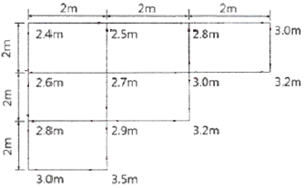
- 1.5m3
- 3.2m3
- 3.8m3
- 4.2m3
(정답률: 62%)
16. 하천측량에서 심천측량과 가장 관계가 깊은 것은?
- 횡단측량
- 기준점측량
- 평면측량
- 유속측량
(정답률: 67%)
17. 하천측량에서 수위관측시 수위표 설치에 부적절한 장소는?
- 하상이나 하안이 안전하고 세굴이나 퇴적이 일어나지 않는 곳
- 수위가 구조물에 의한 영향을 받지 않는 곳
- 잔류 및 역류가 충분히 발생되는 곳
- 하저의 변화가 적은 곳
(정답률: 82%)
18. 터널 내 좌표가 (1265.45m, -468.75m,), (2185.31m, 1961.60m)이고 높이가 각각 36.30m, 112.40m인 AB점을 연결하는 터널의 사거리는?
- 2248.03m
- 2284.30m
- 2598.60m
- 2599.72m
(정답률: 59%)
19. 그림과 같은 삼각형 모양의 토지를 면적비가 1:3이 되도록 D점을 결정하고자 한다. DB의 거리는?
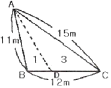
- 2m
- 3m
- 4m
- 5m
(정답률: 80%)
20. 하천에서 부자를 이용하여 유속을 측정하고자 할 때 유하거리는 보통 얼마 정도로 하는가?
- 100~200m
- 500~1000m
- 1~2km
- 하폭의 5배 이상
(정답률: 76%)
2과목: 사진측량 및 원격탐사
21. 항공사진의 촬영고도 2000m, 카메라의 초점거리 210mm이고, 사진의 크기가 21cm×21cm일 때 사진 1장에 포함되는 실제면적은?
- 3.8km2
- 4.0km2
- 4.2km2
- 4.4km2
(정답률: 63%)
22. 동일한 축척으로 촬영된 공중사진을 일정한 축척으로 편위수정하여 집성사진(mosaic)을 만들 때 작업하기가 가장 용이한 것은 어느 사진기를 사용할 때인가? (단, 기타 조건은 동일하다.)
- 보통각 사진기
- 광각 사진기
- 초광각 사진기
- 사진기의 종류와 무관하다.
(정답률: 65%)
23. 초점거리가 180mm인 사진기로 비고 230m인 지역을 촬영하여 축척 1:25,000의 수직사진을 얻었다면 지표면으로부터 촬영고도는?
- 4,500m
- 4,530m
- 4,730m
- 4,900m
(정답률: 67%)
24. 대공표지에 관한 설명으로 틀린 것은?
- 대공표지의 재료로는 합판, 알루미늄, 합성수지, 직물 등으로 내구성이 강하여 후속작업이 완료될 때까지 보존될 수 있어야 한다.
- 대공표지는 항공사진에 표정용 기준점의 위치를 정확하게 표시하기 위하여 촬영 전에 설치한 표지를 말한다.
- 대공표지의 설치장소는 상공에서 보았을 때 30°정도의 시계를 확보할 수 있어야 한다.
- 지상에 적당한 장소가 없을 때에는 수목 또는 지붕 위에 설치할 수도 있다.
(정답률: 74%)
25. 동일한 조건에서 다음과 같은 차이가 있을 경우 입체시에 대한 설명으로 옳은 것은?
- 촬영기선이 긴 경우에는 짧은 경우보다 낮게 보인다.
- 초점거리가 긴 경우가 짧은 경우보다 높게 보인다.
- 낮은 촬영고도로 촬영한 경우가 높은 경우보다 높게 보인다.
- 입체시 할 경우 눈의 위치가 높아짐에 따라 낮게 보인다.
(정답률: 58%)
26. 도화기 또는 좌표측정기에 의하여 항공사진상에서 측정된 구점의 모델좌표 또는 사진좌표를 지상기준점 및 GPS/INS 외부표정 요소를 기준으로 지상좌표로 전환시키는 작업을 무엇이라 하는가?
- 지상기준점측량
- 항공삼각측량
- 세부도화
- 가편집
(정답률: 60%)
27. 사진좌표계를 결정하는데 필요하지 않은 사항은?
- 사진좌표
- 좌표변환식
- 주점의 좌표
- 연직점의 좌표
(정답률: 57%)
28. 원격탐사시스템의 해상도 중 파장 대역의 전자파 에너지를 측정하는 해상도로 옳은 것은?
- 주기 해상도
- 방사 해상도
- 공간 해상도
- 분광 해상도
(정답률: 69%)
29. 원격탐사에 대한 설명으로 옳지 않은 것은?
- 자료 수집 장비로는 수동적 센서와 능동적 센서가 있으며 Laser 거리관측기는 수동적 센서로 분류된다.
- 원격탐사 자료는 물체의 반사 또는 방사의 스펙트럼 특성에 의존한다.
- 자료의 양은 대단히 많으며 불필요한 자료가 포함되어 있을 수 있다.
- 탐측된 자료가 즉시 이용될 수 있으며 재해 및 환경문제 해결에 편리하다.
(정답률: 75%)
30. 영상판독의 요소가 아닌 것은?
- 질감
- 좌표
- 크기
- 모양
(정답률: 79%)
31. 상호표정 수행 후 형성되는 좌표계는?
- 사진좌표계
- 절대좌표계
- 모델좌표계
- 지도좌표계
(정답률: 59%)
32. 어느 지역의 영상으로부터 “밭”의 훈련지역(training field)을 선택하여 해당 영상소 "F"로 표기하였다. 이 때 산출되는 통계 값으로 옳은 것은?
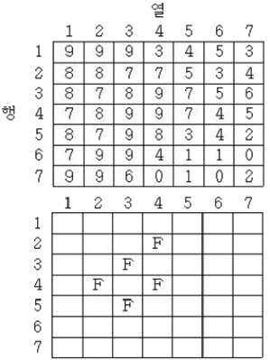
- 평균 : 8.1, 표준편자 : 0.84
- 평균 : 8.2, 표준편자 : 0.84
- 평균 : 8.2, 표준편자 : 0.75
- 평균 : 8.1, 표준편자 : 0.75
(정답률: 64%)
33. 지형도, 항공사진을 이용하여 대상지의 3차원 좌표를 취득하여 불규칙한 지형을 기하학적으로 재현하고 수치적으로 해석함으로 경관해석, 노선선정, 택지조성, 환경설계 등에 이용되는 것은?
- 수치지형모델
- 도시정보체계
- 수치정사사진
- 원격탐사
(정답률: 74%)
34. 한 쌍의 입체모델에서 왼쪽 사진에 찍힌 도로 상의 어느 차량이 오른쪽 사진에서는 주점기선과 평행한 방향으로 오른쪽으로 이동한 상태로 촬영되었다. 이 모델을 입체시하면 차량은 어떻게 보이는가?
- 도로에 안착한 상태로 보인다.
- 도로 위에 떠 있는 상태로 보인다.
- 도로 아래에 가라앉은 상태로 보인다.
- 입체시가 되지 않는다.
(정답률: 61%)
35. 원격탐사 데이터 처리 중 전처리 과정에 해당되는 것은?
- 기하보정
- 영상분류
- DEM 생성
- 영상지도 제작
(정답률: 81%)
36. 표정점을 선점할 때의 유의사항으로 옳은 것은?
- 측선을 연장한 가상점의 선택하여야 한다.
- 시간적으로 일정하게 변하는 점을 선택하여야 한다.
- 원판의 가장자리로부터 1cm 이내에 나타나는 점을 선택하여야 한다.
- 표정점은 X, Y, H가 동시에 정확하게 결정될 수 있는 점을 선택하여야 한다.
(정답률: 86%)
37. 다음 중 항공사진측량으로부터 얻을 수 없는 정보는?
- 수치지형데이터
- 산악지역의 경사도
- 댐에 저수된 물의 양
- 택지 건설시 토공량
(정답률: 84%)
38. 항공사진측량에서 촬영비행기가 200km/h의 속도로 촬영할 경우, 사진축척이 1:20000, 사진 상의 허용흔들림량이 0.02mm라면 최장 노출시간은?
- 1/14초
- 1/49초
- 1/93초
- 1/139초
(정답률: 48%)
39. 엘리뇨 현상을 분석하기 위해 고정 부표를 성치하여 수집한 자료 중 공간보간(spatial interpolation)이 필요하지 않은 자료는?
- 해수면 온도
- 기온
- 습도
- 부표 위치
(정답률: 67%)
40. 항공사진측량의 특징에 대한 설명으로 옳지 않은 것은?
- 정성적 측량이 가능하다.
- 성과의 보존이 용이하다.
- 접근하기 어려운 지역의 조사가 가능하다.
- 구름, 바람 등 기상에 영향을 받지 않는다.
(정답률: 91%)
3과목: GIS 및 GPS
41. 사용자가 네트워크나 컴퓨터를 의식하지 않고 장소에 상관없이 자유롭게 네트워크에 접속할 수 있는 정보통신 환경 또는 정보기술 패러다임을 의미하는 것으로, 1988년 미국의 마크 와이저에 의해 처음 사용되었을며 지리정보시스템을 포함한 여러 분야에서 이용되고 있는 정보화 환경은?
- 위치기반서비스(LBS)
- 유비쿼터스(ubiquitous)
- 텔레메틱스(telematics)
- 지능형교통체계(ITS)
(정답률: 85%)
42. 위상모형을 통하여 얻을 수 있는 기초적 공간분석으로 적절하지 않은 것은?
- 중첩 분석
- 인접성 분석
- 위험성 분석
- 네트워크 분석
(정답률: 79%)
43. 입력된 자료를 정리하여 벡터자료를 구성하는 방법에 대한 설명으로 옳지 않은 것은?
- 속성정보는 반드시 편집이 완료된 뒤에 넣어야 한다.
- 튀어나온 선이나 중복된 선을 삭제하는 작업이 필요하다.
- 선과 선이 교차하는 곳은 반드시 교차점(node) 생성한다.
- 입력 오류는 수동으로 편집할 수도 있고, 자동으로 편집할 수도 있다.
(정답률: 66%)
44. 지리정보시스템(GIS)에 대한 설명으로 옳지 않은 것은?
- CAD 및 그래픽 전용도구이다.
- 합리적 의사결정 지원 도구이다.
- 입지분석을 위한 공간분석 기능을 제공한다.
- 실세계의 공간현상에 대한 공간모델링이 가능하다.
(정답률: 89%)
45. 래스터형 자료의 특징에 대한 설명으로 옳지 않은 것은?
- 자료구조가 간단하다.
- 위상 정보가 제공되지 않는다.
- 중첩 및 원격탐사자료와 연결이 용이하다.
- 픽셀의 크기가 클수록 객체의 형상을 보다 정확하게 나타낼 수 있다.
(정답률: 68%)
46. GIS자료의 정확도에 대한 설명으로 옳은 것은?
- GIS자료의 분석은 아날로그 자료의 분석보다 정확도가 낮다.
- GIS자료의 정확도는 아날로그 자료인 원시자료의 정확도에 영향을 받는다.
- 디지타이징에서 자료의 독취간격이 작을수록 위치정확도가 낮아진다.
- 벡터자료와 격자자료 간의 변환과정에서는 오차가 발생되지 않는다.
(정답률: 72%)
47. 영상의 저장형식 중 지리좌표를 가지는 포맷은?
- GeoTIFF
- TIFF
- JPG
- GIF
(정답률: 80%)
48. 음명기복도(shaded relief image)에 대한 설명으로 옳지 않은 것은?
- 동일한 고도를 갖는 여러 지점들을 연결한 지도이다.
- 음영기복도는 DEM과 같은 3차원 데이터를 이용하여 작성한다.
- 사용자가 정의한 태양 방위값과 고도값에 따라 지형을 표현한 것이다.
- 태양이 비치는 곳은 밝게 표시되고, 그림자 부분은 어둡게 표시한다.
(정답률: 58%)
49. 일반적으로 지리정보시스템을 구현하기 위한 공간자료는 Vector Data Model과 Raster Data Model로 나누어진다. 다음 공간정보 파일 포맷 중 Raster Data Model과 거리가 먼 것은?
- filename.tif
- filename.img
- filename.bmp
- filename.shp
(정답률: 58%)
50. 우리나라 국가기본도에서 사용되는 평면직각좌표계의 투영법은?
- 람베르트 투영법
- TM 투영법
- UTM 투영법
- UPS 투영법
(정답률: 70%)
51. 메타데이터에 대한 설명으로 적당하지 않은 것은?
- 흔히 데이터에 대한 데이터라고 한다.
- 데이터의 내용, 품질 등 데이터의 특성을 설명하는 자료이다.
- 표준화하여 자료제공을 하기 위한 자료이므로, 내부 관리목적으로는 활용하기 어렵다.
- 공간자료 정보시장(spatial data clearinghouse) 구성을 위한 중요한 자료이다.
(정답률: 81%)
52. 최단경로에 참색에 적합한 GIS 분석기법은?
- 버퍼 분석
- 중첩 분석
- 지형 분석
- 네트워크 분석
(정답률: 80%)
53. GNSS 중 러시아 운용되는 위성항법체계는?
- GPS
- JRANS
- Galileo
- GLONASS
(정답률: 84%)
54. GPS에 대한 설명으로 옳지 않은 것은?
- GPS의 1회 주회주기는 약 11시간 58이다.
- GPS 궤도는 6개의 궤도면으로 구성되었다.
- GPS 궤도는 약 55°의 경사각을 갖는다.
- GPS 궤도는 극 궤도이다.
(정답률: 69%)
55. 인접한 지도들의 경계에서 지형을 표현할 때 위치나 내용의 불일치를 제거하는 처리방법을 나타내는 용어는?
- 에지 강조(Edge Enhancment)
- 경계선 정합(Edge Matching)
- 에지 검출(Edge Detection)
- 편집(Editing)
(정답률: 74%)
56. GIS를 이용하는 주체를 GIS 전문가, GIS 활용가, GIS 일반 사용자로 구분할 때, GIS 전문가의 역할로 거리가 먼 것은?
- 시설물 관리
- 프로젝트 관리
- 데이터베이스 관리
- 시스템 분석 및 설계
(정답률: 76%)
57. 항공 측량에서 GPS를 이용한 위치 결정 시 GPS의 단점을 보완할 수 있는 장치로서 촬영 비행기의 위치를 구하는데 많이 활용되고 있는 것은?
- HRV센서
- 레이저거리측정기
- 관성항법장치(INS)
- 모바일앱핑시스템(MMS)
(정답률: 67%)
58. 벡터 데이터 모델은 기본적인 도형의 요소(goemetric primitive type)로 공간 객체를 표현한다. 보기 중 기본적인 도형의 요소로 모두 짝지어진 것은?
- ㉠
- ㉠, ㉡
- ㉡, ㉢
- ㉠, ㉡, ㉢
(정답률: 89%)
59. GPS의 기본 원리에 대한 설명 중 틀린 것은?
- GPS의 기본 원리는 위성을 이용한 삼변측량이다.
- 삼변측량을 위하여 GPS 수신기는 전파신호의 전달 시간을 이용하여 거리를 측정한다.
- 전달 시간을 측정하기 위하여 사용자 수신기에는 루비듐 원자시계를 탑재하고 있다.
- 3차원 정확한 위치를 결정하기 위해서는 수학적으로 4개의 위성으로부터의 거리가 필요하다.
(정답률: 68%)
60. 3차원 공간 위에 3점으로 정의한 삼각형의 조합에 의하여 지표면을 표현하는 방식은?
- 격자(Grid)방식
- 불규칙한삼각망(TIN)방식
- 등고선(Contour line)방식
- 임의점 추출(Random point)방식
(정답률: 88%)
4과목: 측량학
61. 트래버스의 폐합오차 조정에 대한 설명 중 옳지 않은 것은?
- 트랜싯법칙은 각관측의 정확도가 거리관측의 정확도보다 좋은 경우에 사용된다.
- 컴퍼스법칙은 폐합오차를 전측선의 길이에 대한 각 측선의 길이에 비례하여 오차를 배분한다.
- 트랜싯법칙은 폐합오차를 각 측선의 위거ㆍ경거 크기에 반비례하여 오차를 배분한다.
- 컴퍼스법칙은 각관측과 거리관측의 정밀도가 서로 비슷한 경우에 사용된다.
(정답률: 65%)
62. 지형의 표시 방법과 거리가 먼 것은?
- 교회법
- 수치표고모델(DEM)
- 등고선법
- 점고법
(정답률: 71%)
63. 표준길이보다 3cm가 긴 30m의 줄자로 거리를 관측한 결과, 2점간의 거리가 300m이었다면 실제 거리는?
- 299.3m
- 299.7m
- 300.3m
- 300.7m
(정답률: 72%)
64. 그림과 같은 지형도의 등고선에서 가장 급한 경사를 나타낸 선은?
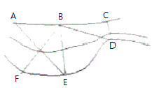
- CD
- BF
- AF
- BD
(정답률: 79%)
65. 기포관의 감도가 20“인 레벨로 거리 100m 지점의 표척을 시준할 때 기포관에서 1눈금의 오차가 있었다면 수준 오차는?
- 2.5mm
- 4.8mm
- 9.7mm
- 12.3mm
(정답률: 62%)
66. A점의 좌표 XA=69.3m, YA=636.22m이고, B점의 좌표 XB=153.47m, YB=123.56m 되는 기지점 사이를 측량하여 위거의 총합이 +84.3m이고, 경거의 총합이 -512.6m이었다면 폐합오차는?
- 0.9m
- 0.12m
- 0.14m
- 0.18m
(정답률: 62%)
67. 측량에서 사용되는 용어에 대한 설명으로 옳지 않은 것은?
- 경중률은 어느 한 관측값과 이와 연관된 다른 관측값에 대한 상대적인 신뢰성을 표현하는 척도를 말한다.
- 최확값은 일련의 관측값들로부터 얻어질 수 있는 참값에 가장 가까운 추정값이다.
- 경중률은 일반적으로 표준 편차의 제곱에 반비례한다.
- 잔차란 참값과 최확값의 차를 말한다.
(정답률: 59%)
68. 수준측량의 선점에서 유의해야 할 사항이 아닌 것은?
- 가능한 한 위성츠ㅤㅜㄱ위에 지장이 없는 위치를 선정하는 것이 좋다.
- 일반인의 접근이 어렵고록 교통량이 많이 도로 상에 선정한다.
- 습지, 지반연약지 또는 성토지 등 침하가 일어날 우려가 있는 장소와 지하시설물이 있는 장소는 피한다.
- 매설 및 관측 작업이 편리한 장소에 선정한다.
(정답률: 86%)
69. 노선 및 하천측량과 같이 폭이 좁고 거리가 먼 지역의 측량에 주로 이용되는 삼각망은?
- 단열 삼각망
- 사변형 삼각망
- 유심 삼각망
- 단 삼각망
(정답률: 79%)
70. 지구의 반지름 R=6370km이고 거리측정 정도를 1/105까지 허용하면 평면측량의 한계반지름은?
- 약 22km
- 약 35km
- 약 70km
- 약 140km
(정답률: 49%)
71. 그림과 같은 삼각형의 변 길이를 구하기 위하여 log를 취하였을 때 AC의 거리를 구하는 식으로 옳은 것은?
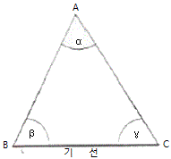
- loc Ac=log sinα-log BC+log sinβ
- loc Ac=log sinα+log BC-log sinβ
- loc Ac=log sinβ+log BC-log sinα
- loc Ac=log sinβ-log BC-log sinα
(정답률: 60%)
72. 표고 500m인 장소에서 수평거리 1500m는 평균해면상에서 몇 m인가? (단, 지구반지름은 6370km로 가정)
- 1499.88m
- 1499.92m
- 1499.94m
- 1500.12m
(정답률: 54%)
73. 수준측량의 용어에 대한 설명으로 틀린 것은?
- 높이를 알고 있는 점에 세운 표척의 눈금을 읽는 것을 후시하 한다.
- 전시만 관측하는 점으로 다른 측점에 영향을 주지 않는 점을 중간점이라 한다.
- 전후의 측량을 연결하기 위하여 전시와 후시를 함께 취하는 점을 이기점이라 한다.
- 기계를 수평으로 설치하였을 때 기준면으로부터 기계를 세운 지점의 지반고까지의 높이를 기계고라 한다.
(정답률: 57%)
74. 어떤 측선의 길이를 관측하여 표와 같은 값을 얻었을 때 최확값은?
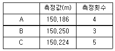
- 150.118m
- 150.218m
- 150.228m
- 150.238m
(정답률: 70%)
75. 기본측량성과의 고시에 포함되어야 하는 사항이 아닌 것은?
- 측량의 비용
- 측량의 정확도
- 측량성과의 보관장소
- 설치한 측량기준점의 수
(정답률: 65%)
76. 1:5000 지형도의 도엽의 1구획으로 옳은 것은?
- 경위도차 15‘
- 경위도차 7‘ 30“
- 경위도차 1‘ 30“
- 경위도차 30“
(정답률: 63%)
77. 측량기기 중에서 트랜싯(데오드라이트), 레벨, 거리측정기, 토털 스테이션, 지피에스(GPS) 수신기, 금속관로 탐지기의 성능검사 주기는?
- 2년
- 3년
- 5년
- 10년
(정답률: 86%)
78. 측정ㆍ수로조사 및 지적에 관한 법률에서 정의한 기본측량의 정의로 옳은 것은?
- 국가, 지방자치단체, 그 밖에 대통령령으로 정하는 기관이 관계 법령에 따른 사업 등을 시행하기 위하여 실시하는 측량
- 모든 측량의 기초가 되는 공간정보를 제공하기 위하여 국토교통부장관이 실시하는 측량
- 공공의 이해에 관계가 있는 측량
- 모든 소유권에 기본을 두는 측량
(정답률: 74%)
79. 측량기준점을 크게 3가지로 구분할 때 이에 속하지 않는 것은?
- 국가기준점
- 공공기준점
- 지적기준점
- 수로기준점
(정답률: 65%)
80. 공공측량에 관한 공공측량 작업계획서를 작성하여야 하는 자는?
- 측량협회
- 측량업자
- 공공측량시행자
- 국토지리정보원장
(정답률: 77%)